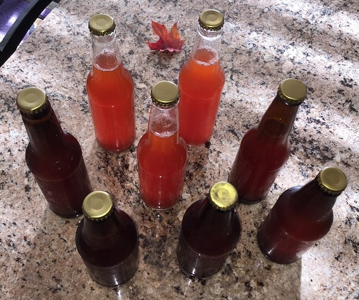

Recipe | Fresh Ginger Ale
My ginger ale recipe is simple and calls for only shelf-stable ingredients. It's spicier than Canada Dry, but not so hot that it's uncomfortable. The resulting beverage can be consumed immediately, kegged indefinitely, or bottled and shared. I prepare my sodas using force carbonation, but if you don't have the equipment you can just use store-bought seltzer. A single serving of soda will signify 12 fluid ounces, the size of standard aluminum cans and glass bottles. The ingredients listed will be enough for a single serving and should be scaled accordingly, e.g. multiply by 5 for a two-liter bottle (~60 fl oz of usable volume), multiply by 32 for a three-gallon keg (384 fl oz), etc.
Ingredients
For single serving of 12 fl oz. Scale accordingly.
- 7.2 tsp / 2.4 Tbsp / 1.2 fl oz / 30 g - Turbinado Sugar
- 1 tsp / 0.33 Tbsp / 0.167 fl oz - Santa Cruz Organic Lemon Juice
- 1.5 tsp / 0.5 Tbsp / 0.25 fl oz - Santa Cruz Organic Lime Juice
- 1.5 tsp / 0.5 Tbsp / 0.25 fl oz - The Ginger People Ginger Juice
Santa Cruz Organic also sells ginger juice. I haven't tried any, but I'm sure it would taste equally good. The lemon and lime juices are not from concentrate, so they taste much fresher than reconstituted juice. And, by all means, if you have plenty of citrus and ginger on hand then feel free to make your own juice for an even fresher taste.
*Strawberry soda pictured here, ginger ale will be different color Syrup
When I make simple syrup, I use a volume ratio of 1:1 sugar:water. I've observed a ratio of about 1.6 for ingredients to syrup: 1 cup sugar and 1 cup water will make about 1.6 cups syrup. This may vary based on how much water evaporates during the heating process.
- In a pan on low heat, combine turbinado sugar with equal parts water. Stir occasionally until sugar dissolved.
- Add juices to syrup, stirring lightly, and heat to 140-150 degrees F for a couple minutes to pasteurize.
Making Soda With Seltzer
If you have carbonating equipment, continue to the next section. Otherwise continue reading here to prepare your ginger ale with pre-made seltzer. If you're going down the seltzer route, you can choose to drink the soda immediately or bottle it for later. Bottling only requires a sanitized glass bottle, a new crown cap, and a capper.
- If you intend to drink right away, place the syrup in the freezer for a few minutes.
- Put a serving's worth of syrup in your container, bottle or glass.
- Determine how much seltzer you need to for 12 fl oz of soda. You'll probably have around 2.5 fl oz of syrup in your container, so you'll need about 9.5 fl oz of seltzer.
- Tilt your container at a 45 degree angle, and gently pour your cold seltzer into it as to avoid losing carbonation.
- If your container is a bottle, cap it then gently shake the bottle to ensure the syrup is mixed with the seltzer. If your container is a glass, gently stir the mixture with a spoon, straw, or bare hands (don't) and enjoy your fresh ginger ale right away.
Making Soda With Force Carbonation
If you're force carbonating, you'll have either a keg or a two-liter soda bottle with a carbonation cap pretending to be a keg. If I was using my 3-gallon keg, for example, I would scale the ingredients by 32 for the 384 fl oz of liquid. For small batches, a repurposed and cleaned plastic two-liter will hold 60 fl oz, requiring a scale factor of 5.
- Place your still-warm syrup into your sanitized keg or two-liter.
- Fill the rest of your keg or two-liter with cold water.
- Oxygen removal: If you're using a two-liter, 60 fl oz is a little less than 2L so you should have some air in your bottle. Slowly squeeze your two-liter to the point where the liquid is about to split out, then tightly screw on the carbonation cap. Your two-liter should now be oxygen (O2) free and slightly crushed (it will reinflate when C02 is applied).
- Oxygen removal: If you're using a keg, you'll still probably have some headspace above the liquid. Attach the CO2 hose, and, with pressure valve help open, blast a little CO2 through the top of keg. Because CO2 is heavier than O2, that should have displaced all the oxygen with CO2 (science maybe?).
- If you haven't already, attach your CO2 hose to the keg or two-liter and adjust the pressure regulator to output around 40 PSI.
- Shake or agitate your keg or two-liter to hasten the absorbtion of CO2 into your soda. Do this until you can no longer hear CO2 absorbtion. This should only take a few minutes with a two-liter. Large kegs will take much longer, so you may instead just place the keg and equipment into a refrigerator for two to three days.
- When fully carbonated, tap the keg either drink right away or bottle as described at the end of the previous section.